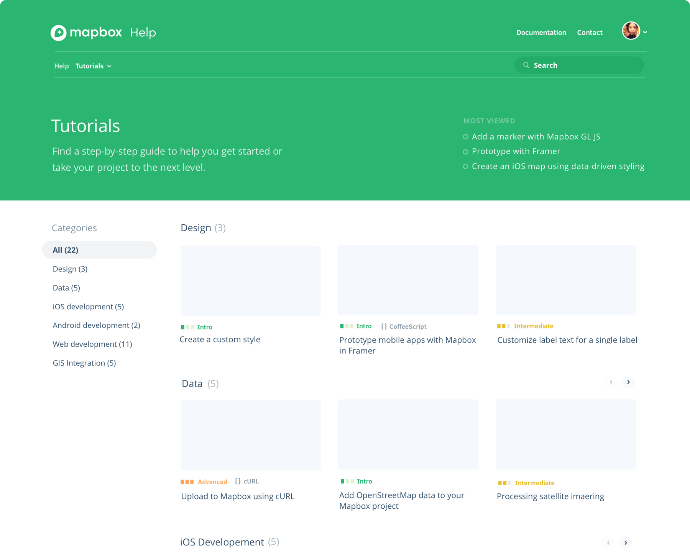

Case Study
Developer Experience
Mapbox enables developers to control the entire experience of their location applications, from the visual design of the map style to interactive features like spatial analysis and turn-by-turn navigation. Making the entire integration experience seamless is crucial to the success of our products.
In December, 2016, we started an overhaul of our entire developer experience, from the post signup onboarding flow to the support and documentation system. The primary goal is to increase developer activations and create a more engaging experience for developers across all the platforms.
This is a project where I had the opportunity and pleasure to work closely with many different teams at Mapbox: support, business, analytics, core tech, web, and mobile. This is the most enjoyable part of the project: building consensus (both on tech and design) across multiple teams, and figuring out ways to empower other teams to help more users.
Developer Onboarding flow

Developer Onboarding
My Role
UI
Team
Tom MacWright (UX & engineering)
Saman Bemel-Benrud (UI & engineering)
David Clark (engineering)
In the early days, the on-boarding flow focused heavily on professional GIS users and cartographers, explaining how different pieces of Mapbox fit together. As the product focus shifts to be more developer-oriented, we needed a method to help users to start building and tinkering right away.
The first problem we are trying to solve is: how can we help developers to use our resources and succeed.
For the new on-boarding flow we focused on a very simple task: adding a basic map view. After the install flow, we guide users to more complicated examples. We've discovered through user interviews that examples (not documentations) are a primary source of how people learn our tools.
After the launch we've seen an increase in new account activations, mobile SDK adoptions, and other metrics. Platform separation also allows us to collect more accurate persona information for targeted marketing campaigns. The open/click-through rate of our on-boarding emails increased significanltly with an CTA of 30% for Android developers.

Help Redesign

Help home page
Better search results formatting on clear seperation of sections.

Help tutorial page
Create categories and difficulty levels for tutorials.
Help Guide
My Role
UI
Team
Katy Deborah(engineering)
Colleen Mcginnis(UX & engineering)
Mapbox has an incredibly complicated product system. It allows people to build powerful things, but it can also be a bit daunting to learn how it works at first. We have an amazing support team who have produced hundreds of narrative guides and step-by-step tutorials. But this has made it challenging to organize and navigate the content. Our help home page at some point became an index page for all the articles with huge blocks of links.
Two questions we ask ourselves are: How can we help users find the content? How can make the existing content shine?

The search results are better formatted with color-coded tags. The search input and a dropdown navigation menu are visible throughout the entire site. So no matter which page the user is browsing, they will be able to find the information they are looking for. The single article page is redesigned with better typography to help users focus on the content. Small details like floating sidebards makes links to related context more visible.
Illustrations I created to help explain concepts and make the page more friendly.

Developer home page
Make the page more platform-focused.

Unity documentation page
Two column layout with sidebar navigation.
Documentation system
My Role
UI & UX
Team
Nadia Barbosa (iOS)
Cameron Mace (Android)
Dan Swick (Unity)
Documentation helps users understand and use how tools. It is the most crucial part of our developer experience. In the past, the technical documentation is managed separately by individual product teams, with very different visual and content styles. Sometimes users may want to use more than one products and they were often confused by the lack of consistent designs.
We then realized that the separation of teams should not be reflected in our documentation system. And the organization structure should not prevent us from providing a cohesive product experience for our users.

Standardization provides us an excellent chance to rethink the content architecture and the navigation system. The first level is platform and the second level is all products inside that platform. We also thought about how platform-agnostic documentations fit into the overall system.